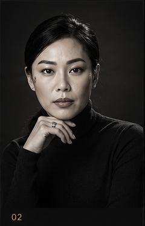
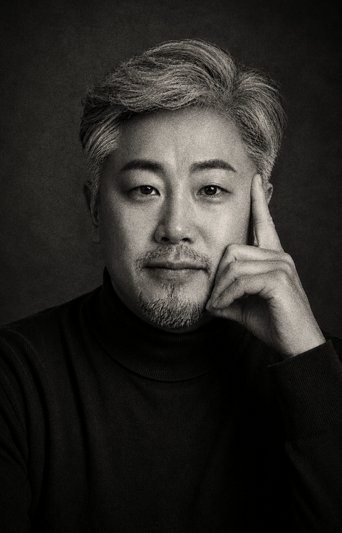
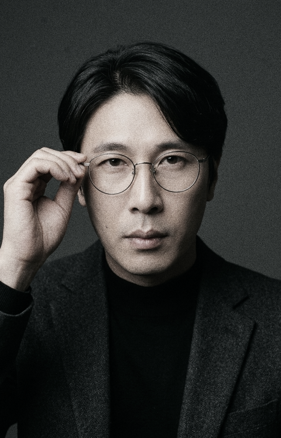
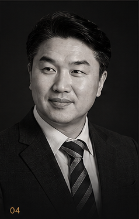
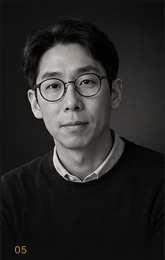
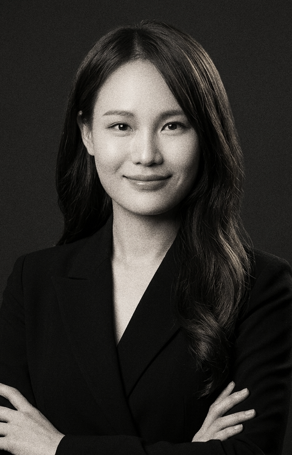
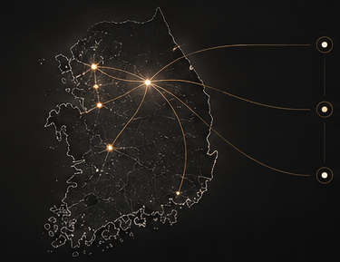

TOUCH THE DROP — 새로움이 샘처럼 솟아나는 곳
새미새론AI교육원은 '새로운 것이 샘처럼 솟아난다'는 뜻을 품고 있습니다. AI 기술의 급격한 발전 속에서 도태되지 않고, 누구나 자신의 지식과 경험에 AI를 융합하여 새로운 가치를 창출하도록 돕습니다.
원주 본부를 기점으로 전국 각지의 미디어·XR·디자인·엔지니어링 전문가들이 유기적으로 결합하여, 기초 리터러시 교육부터 고난도 국책 R&D 실증 프로젝트까지 전 과정을 수행합니다.
AI 활용 역량과 교육 설계 능력을 겸비한 전문 강사를 체계적으로 양성합니다.
공공기관·기업·학교가 필요로 하는 맞춤형 AI·XR·영상 콘텐츠 프로젝트를 직접 수주·수행합니다.
경복대학교를 비롯한 대학원 및 연구소와의 협력으로 학술 이론과 실무 현장의 가교를 구축합니다.
지역의 한계를 뛰어넘어 온라인 캠퍼스와 전국 지부 네트워크를 통해 어디서나 동일한 수준의 교육을 제공합니다.






새미새론은 원주 본부를 기점으로 수도권 및 충청권을 잇는 전국 단위 전문가 거점을 형성하고 있습니다. 단순히 한 곳에서 배우고 끝나는 교육이 아니라, 지역의 실제 프로젝트와 인재가 서로 교류하는 순환형 플랫폼을 지향합니다.

김소영 대표·이사장 · 임창식 교육원장
김태완 크리에이티브이사 (Visual Design)
한기열 콘텐츠이사 (Interactive XR)
조안나 디자인이사 (Branding & UX)
김봉수 연구이사 (R&D · ㈜글림시스템즈)
AI·XR 시뮬레이션 미디어콘텐츠 연구원 연계
5060 시니어, 소상공인, 비전공자를 위한 생활 밀착형 AI. 예·복습 부담 없이 수업 안에서 따라하며 경조사 문자, 스마트폰 사진, 여행 통역, 필수 문서를 마스터합니다.
카메라로 직접 촬영하고 AI로 완성합니다. 소상공인 상품 사진의 AI 화보 변환부터 실제 촬영물과 생성형 AI를 결합한 하이브리드 광고 영상·숏폼 제작 실무를 체득합니다.
기획부터 스토리 구성, AI 화풍 통일, 북 디자인까지. 내 머릿속의 아이디어와 감성 시문학을 한 권의 정식 AI 시그림책으로 엮어 출판하는 힐링 창작 코스입니다.
구독료와 고가 장비 부담을 줄이며 무료·저비용 서비스를 스마트 라우팅으로 연결합니다. 24시간 반복 업무를 대신 처리하는 나만의 1인 AI 비서 시스템을 구축합니다.
AI 도구를 단순히 사용하는 것을 넘어, 나에게 필요한 전용 음성 입력기나 업무 데스크탑 도구를 바이브코딩으로 직접 제작하고 검증하는 메이커 실습입니다.
동물·과일 드래그 짝맞추기부터 10손가락 홈 포지션 안내도, 인터랙티브 스마트 자판 탐색기, 3대 타자 아케이드(방울비·블록깨기·키친), 실시간 60초 공인 급수 검정과 영구 성장 기록까지 무설치·무로그인으로 누구나 바로 실행할 수 있습니다.
5060 시민들을 대상으로 매주 2회 진행되는 35회차 실전 교안. 경조사 문자 작성부터 스마트폰 사진 보정, 생성형 AI 기초까지 전원 실습 성공. (임창식 교육원장)
지역 창업가와 소상공인의 실제 제품을 조명 촬영하고 AI 화보로 변환. 촬영 실사와 AI 비주얼을 합성한 상업용 숏폼 광고 콘텐츠 완성. (임창식 교육원장)
① AI 사진·영상 심화, ② SNS 콘텐츠 자동화 및 크론잡 운영, ③ AI 시그림책 기획부터 자체 출판사 연계 정식 출판까지 전 과정 원스톱 진행. (임창식 교육원장)
TouchDesigner 기반 센서 반응형 미디어아트 및 문화공간 인터랙션 시스템 구축. 공공 전시 콘텐츠 및 대학 미디어 전공 실무 교육 직강. (한기열 콘텐츠이사)
21년 경력 특급기술자 총괄. 국방/군용 실시간 3D 시뮬레이션 시스템 납품 및 대형 건축물 미디어 파사드 하드웨어·소프트웨어 아키텍처 설계. (김봉수 연구이사)
디지털트윈 기반 3D 가상도시 공간 기획 및 Red Dot · iF 어워드 수상 노하우 기반의 기업 브랜드 아이덴티티(VI) 및 AI 에셋 UI/UX 프로젝트. (김태완 & 조안나 디자인이사)
배우는 사람, 가르치는 사람, 만드는 사람, 그리고 새로운 일을 찾는 조직이 만나는 곳.
새미새론과 함께 새로운 미래를 설계해 보세요.
마스터 임창식 감독 총괄 디렉팅 최종 승인 릴리즈.
• 공식 골드 워드마크(44px) 및 파비콘·훈련원 엠블럼 심볼 완벽 안착
• 마우스&타자 훈련원, AI 윤리 실습실, 온라인 캠퍼스 전 페이지 사이트맵 통합 연동
• 역대 기획본 및 시안들을 단 하나도 버리지 않고 100% 링크로 보존한 실시간 아카이브 구축.
마스터 임창식 총괄 디렉팅 + ChatGPT 외부 감리 + AGY 풀스택 빌드 + Chrome CDP 런타임 실측 0/0/0/0/0 콘솔 무결점 달성.
다크 럭셔리 글래스모피즘 디자인과 Three.js 3D 물방울 리플 엔진(Touch-the-Drop) 탑재. 6인 포트레이트 및 정관 73조 8개 탭 법적 공시 모달 체계 완비.
실시간 수강생을 위한 독자적 온라인 캠퍼스(campus.html) 및 14대 단과 커리큘럼, 온라인 자격검정 모의 응시실 분리 구축.
국내 최초 시나리오 기반 AI 윤리 및 딥페이크 판별 인터랙티브 시뮬레이션 모듈(ai_literacy_interactive) 개발 및 연동.
헤나 위스퍼(Hena Whisper) 단축키 음성 비서 제작 및 Rust/Tauri 경량 데스크탑 GUI 환경 연동.
Kimi 2.6의 모티베이션과 임창식 교육원장의 30년 강의 내공을 결합하여 '새미새론AI교육원 협동조합' 창립총회 의결 및 첫 홈페이지 뼈대 수립.